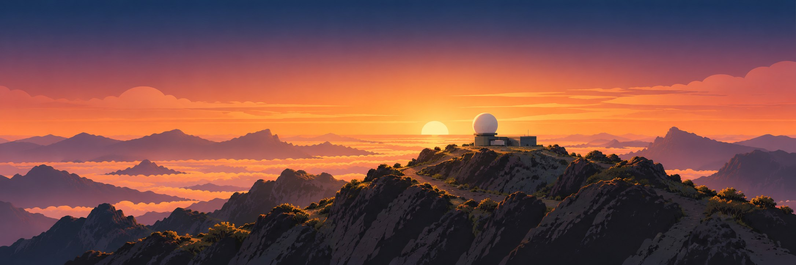
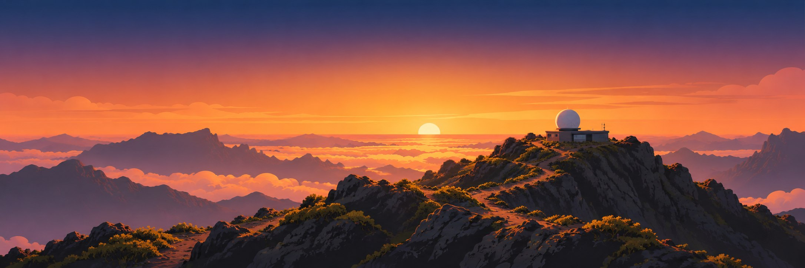
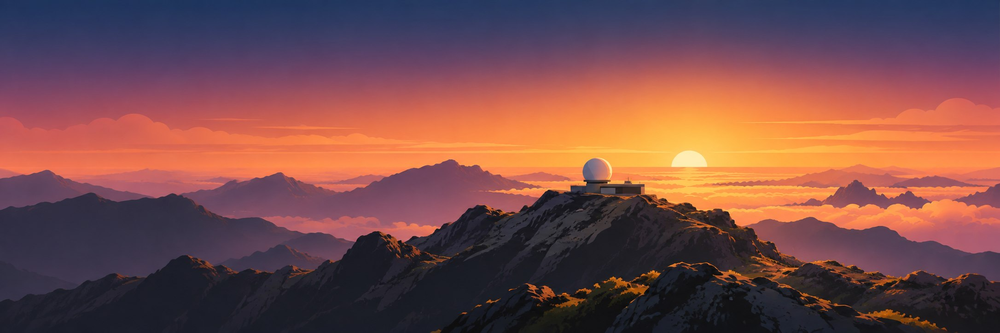
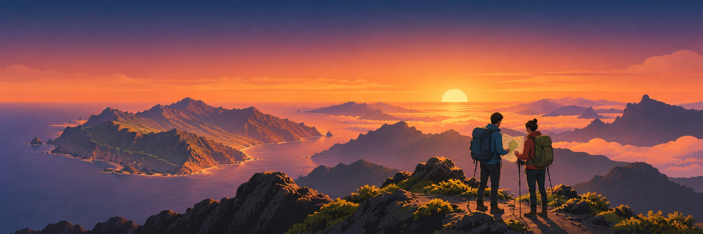
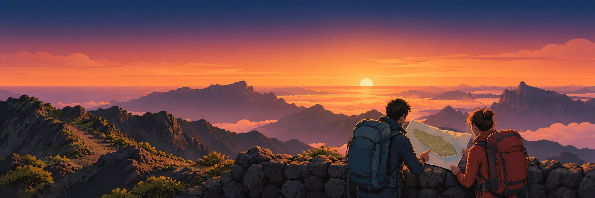
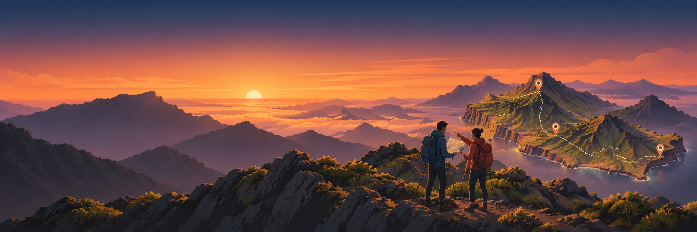
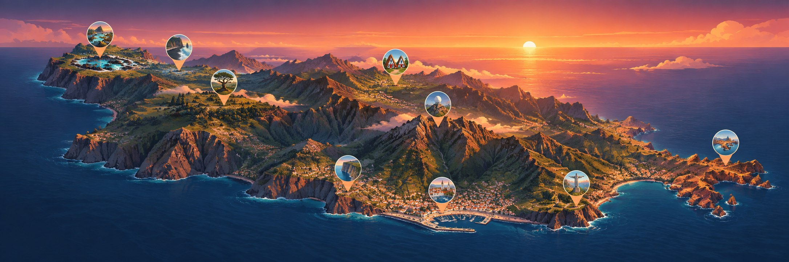
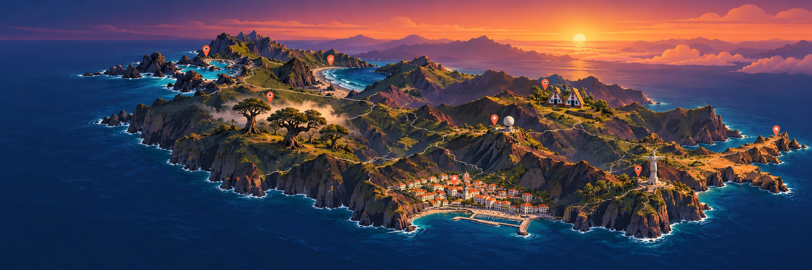
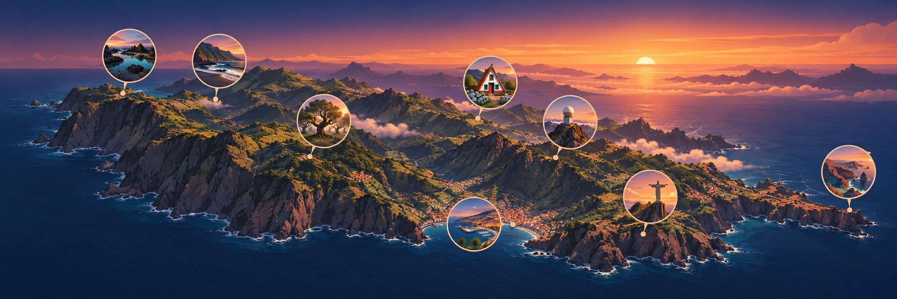
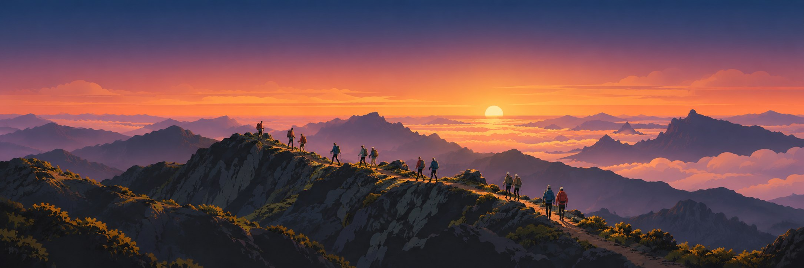

Банери в єдиному стилі
Три варіанти для кожного розділу. Це ілюстрації для вибору; текст сторінок буде накладено окремо. Мапи декоративні — розташування іконок не призначене для навігації.
Схід сонця



План подорожі



Локації



Маршрути — ширший ракурс
